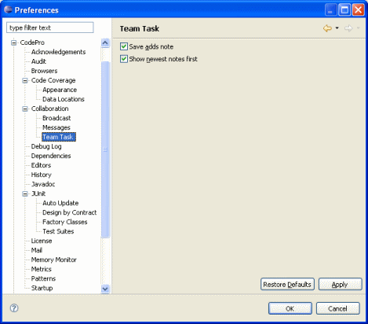

Preferences - Team Task This page is used to control team task-related options. Save adds noteThis option specifies whether the save function also adds any notes that have been written but not added. Show newest notes firstThis option specifies whether notes are shown in chronological order or reverse chronological order within the team task editor. |